How to make an origami ninja star

1. Take two pieces of square paper.
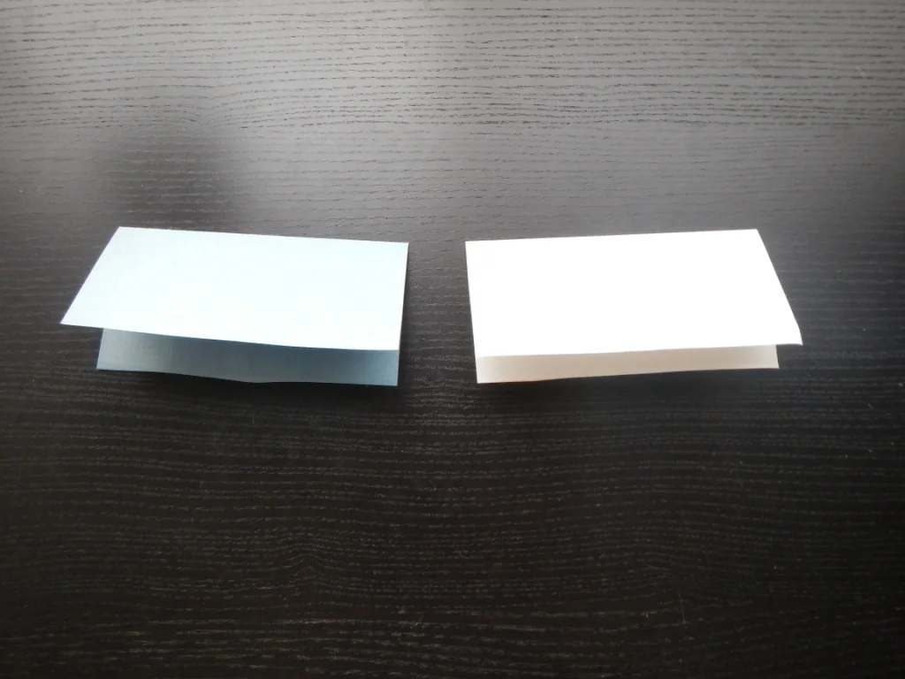
2. Fold the top of the paper down on both sections
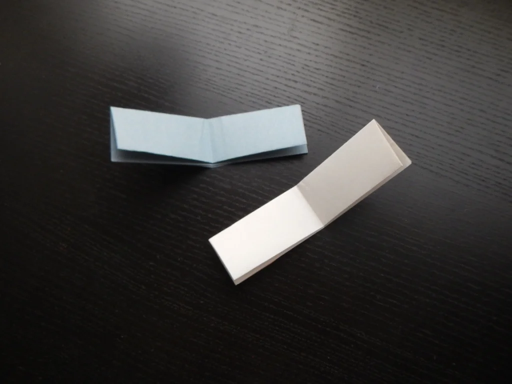
3. Fold both the pieces of paper
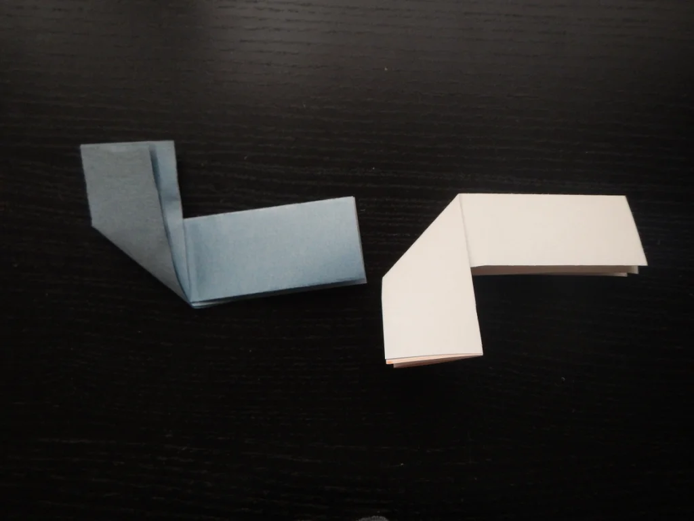
4. For the left piece fold the left sife up, aligning it with the fold you made in the previous step.
for the right piece fold the left side down
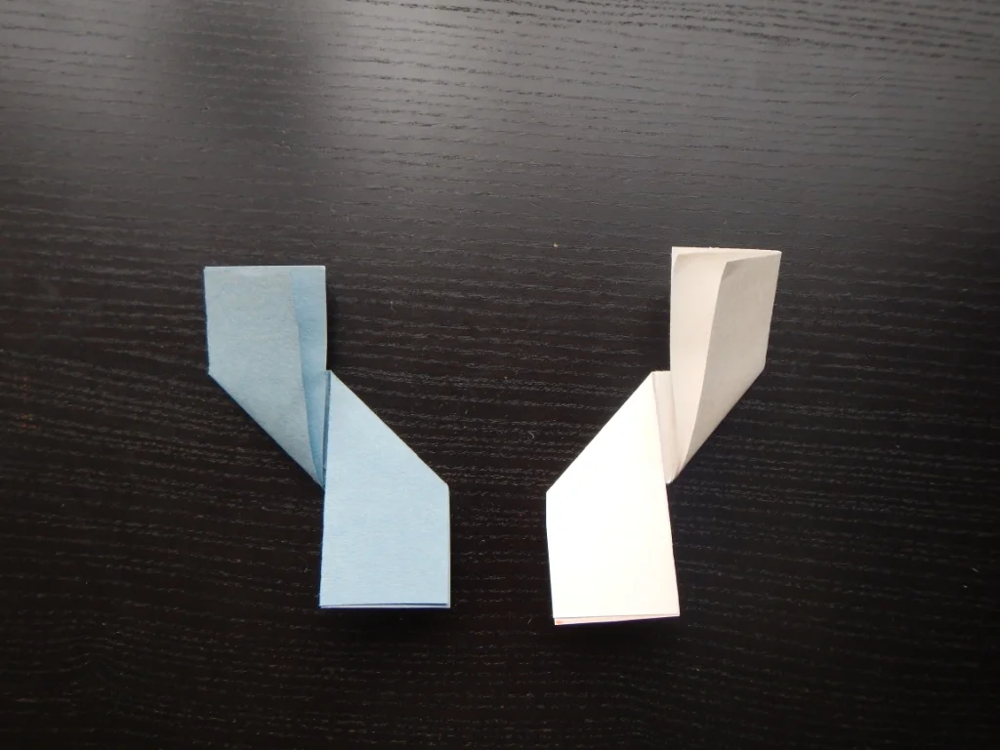
5. Now fold the opposite sides of the papers the opposite way
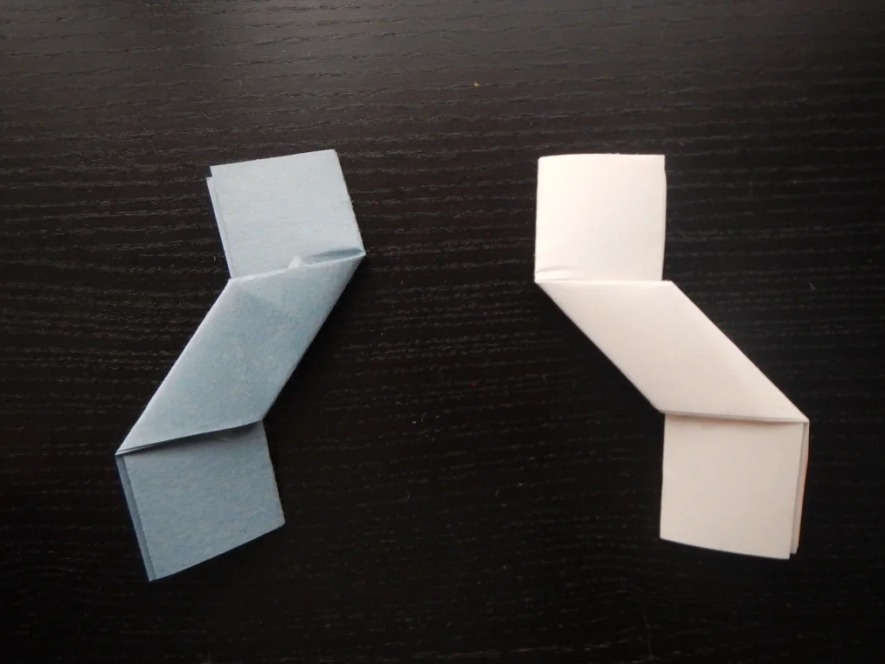
6. Flip the papers over
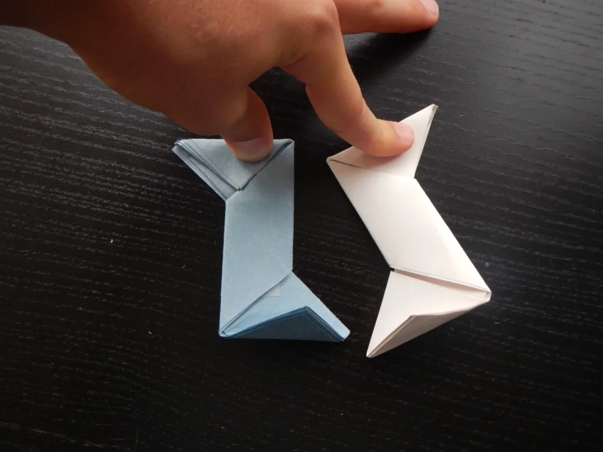
7. Fold the corners as so
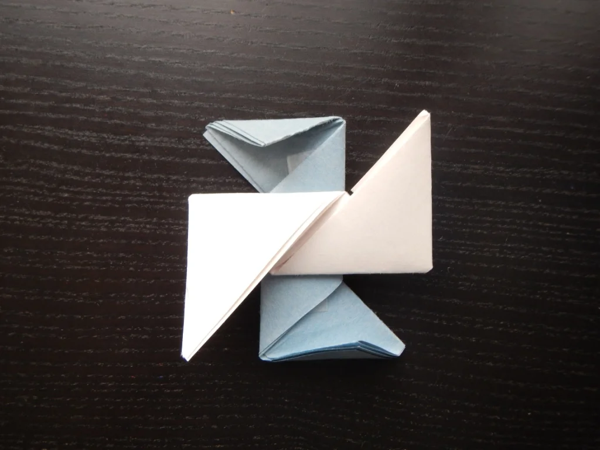
8. Orient the paper like in the photo
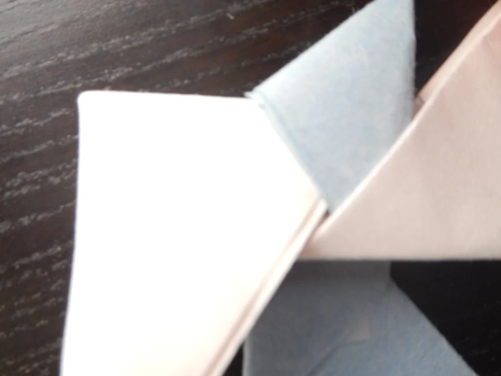
9. Tuck the uppermost flap into the one on the right
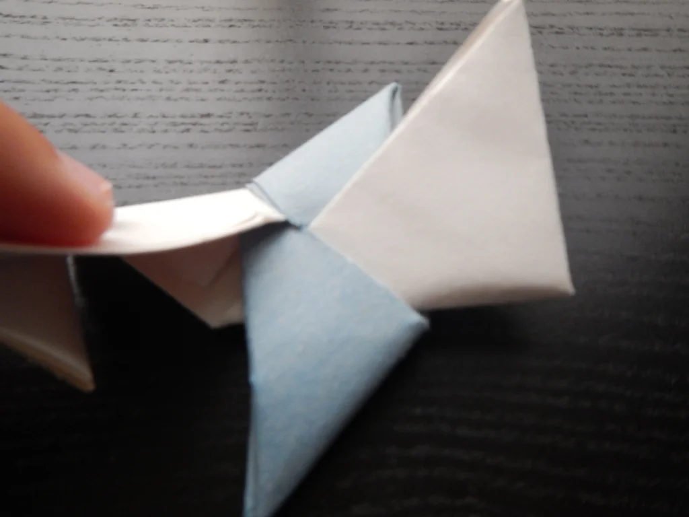
10. tuck the bottom flap into the left one
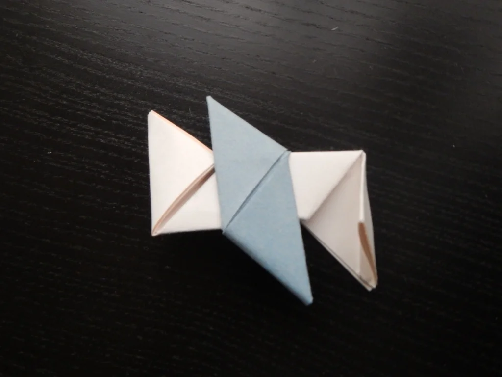
11. Flip over
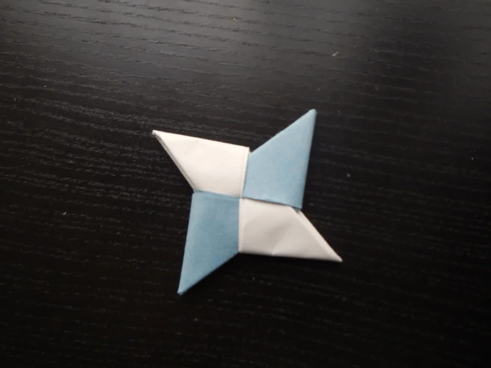
12. Tuck in the right flap into the space between the upper and lower flaps, then do the same with the left flap